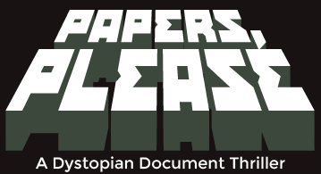

Simulation · 2013
Papers, Please
Bureaucracy as moral horror; a stamp is the most violent tool here.

Cover: Wikipedia: Papers, Please
Facts
- Released
- 2013-08-08
- Genre
- Simulation
- Category
- Simulation
- Platforms
- Mobile, PC, PlayStation
- Developers
- Lucas Pope
- Publishers
- 3909
PC requirements
- Minimum
- [object Object]
- Recommended
- [object Object]